PyQGIS Masterclass - Customizing QGIS with Python (Full Course Material)
Learn the PyQGIS API from the Ground Up.
Ujaval Gandhi
- Introduction
- Software
- Get the Data Package
- Where can you use Python in QGIS?
- 1. Hello World!
- 2. Hello PyQGIS!
- 3. Understanding Classes
- 4. Using PyQGIS Classes
- 5. Graphical User Interface (GUI) Programming Basics
- 6.
Deep Dive into PyQGIS
- 6.1 QGIS Interface API
(QgisInterface)
- 6.1.1 Change Title of QGIS Main Window
- 6.1.2 Change Icon of QGIS Main Window
- 6.1.3 Remove Raster and Vector Menus
- 6.1.4 Understanding Signals and Slots
- 6.1.5 Add A New Menu Item
- 6.1.6 Change Visibility of a Toolbar
- 6.1.7 Add a button to a toolbar
- Exercise 2
- 6.1.8 Add New Layers
- 6.1.9 Change name of a Layer
- Exercise 3
- 6.2 QGIS Project API (QgsProject)
- 6.1 QGIS Interface API
(QgisInterface)
- 7. Running Python Code at QGIS Launch
- 8. Running Processing Algorithms
- Assignment
- 9. Advanced Python Concepts
- 10. Writing Python Console Scripts
- 11. Processing Scripts
- 12. Writing Plugins
- 13. Writing Standalone Python Scripts
- 14. QGIS Actions
- 15. Supplement
- Create a Geodesic Line
- Save Map Rendering as an Image
- Search for a layer
- Turn a layer on/off
- Get all Layers
- Get only checked (visible) Layers
- Get only selected Layers
- Set Canvas Extent to a Layer Extent
- Get Layers with Hierarchy
- Remove a Specific Button from a Toolbar
- Add a Drop-down Menu to Toolbar
- Adding CSV Layers
- Inserting Layers in the Layer Tree
- Saving Layers to Disk
- Displaying a label with a background color
- Edit Attribute Table of a Vector Layer
- Creating a PDF with Title
- Simplifying Processing Scripts
- What next?
- Resources
- Data Credits
- License

Introduction
This class introduces the concepts of Python programming within the QGIS environment. We will cover the full breadth of topics that involve everything from using the Python Console to building a fully functional plugin. We will also explore GUI programming techniques for customizing the QGIS interface using Qt widgets.
This course requires basic knowledge of Python. If you are not familiar with Python, it is strongly recommended you complete our Python Foundation for Spatial Analysis course. We will build upon the exercises covered in that course.
Software
This course requires QGIS LTR version 3.28. Please review QGIS-LTR Installation Guide for step-by-step instructions.
Get the Data Package
The code examples in this class use a variety of datasets. All the
required layers, project files, icons etc. are supplied to you in the
pyqgis_masterclass.zip file. Unzip this file to the
Downloads directory. All scripts assume the data is
available in the
<home folder>/Downloads/pyqgis_masterclass/
directory.
Download pyqgis_masterclass.zip.
Where can you use Python in QGIS?
- Issue commands from Python Console
- Automatically run python code when QGIS starts
- Write custom expressions
- Write custom actions
- Create new processing algorithms
- Create plugins
- Create custom standalone applications
1. Hello World!
QGIS Comes with a built-in Python Console and a code editor where you can write and run Python code.
Go to Plugins → Python Console to open the console.
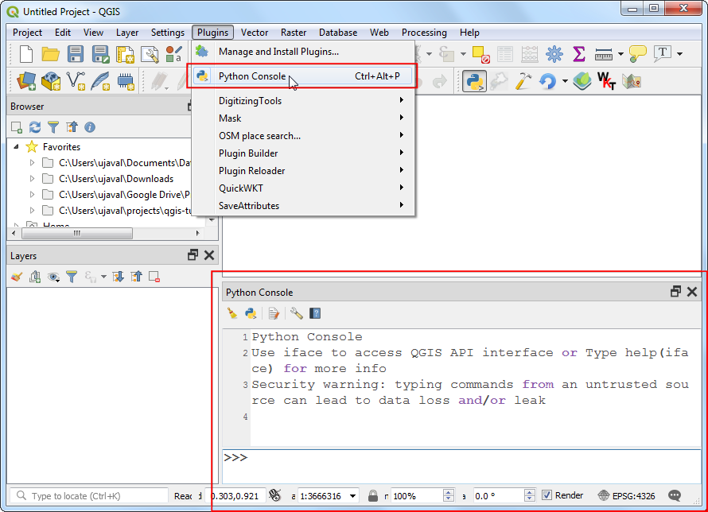
At the >>> prompt, type in the following
command and press Enter.
Here you are running Python’s print() function with the text ‘Hello World’. The output of the statement will be printed below.
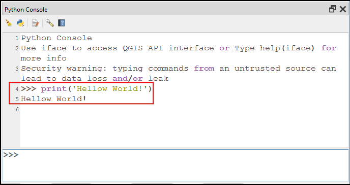
While console is useful for typing 1-2 lines of code or printing information contained in a variable, you should use the built-in editor for typing longer scripts or code snippets. Click the Show Editor button to open the editor panel. Enter the code and click the Run Script button to execute it. The results will appear in the console as before. If you are working on a longer script, you can also click the Save button in the editor to save the script for future use.
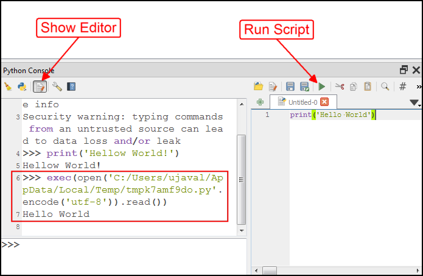
All code snippets below should be run from the Editor.
2. Hello PyQGIS!
QGIS provides a Python API (Application Programming Interface), commonly known as PyQGIS. The API is vast and very capable. Almost every operation that you can do using QGIS - can be done using the API. This allows developers to write code to build new tools, customize the interface and automate workflows.
Let’s try out the API to perform some GIS data management tasks.
Browse to the data directory and load the shoreline.shp
layer. Open the Attribute Table. This layer has 6 attribute
columns. Let’s say we want to delete the 2nd column
(SDE_SFGIS_) from the layer.

This can be done using the QGIS GUI as follows
- Right-click the
shorelinelayer and click Open Attribute Table. - In the Attribute Table, click the Toggle Editing mode button.
- Click the Delete field button. Select the
SDE_SFGIS_column and click OK. - Click the Save edits button and click the Toggle Editing mode to stop editing.
QGIS Provides an API to accomplish all of this using Python code. We will now do this task - but using only Python code. Open the Editor and enter the following code. Click the Run Script button to execute it.
Make sure you have selected the
shorelinelayer in the Layers panel before running the code.
You will see that the 2nd column is now deleted from the attribute table.
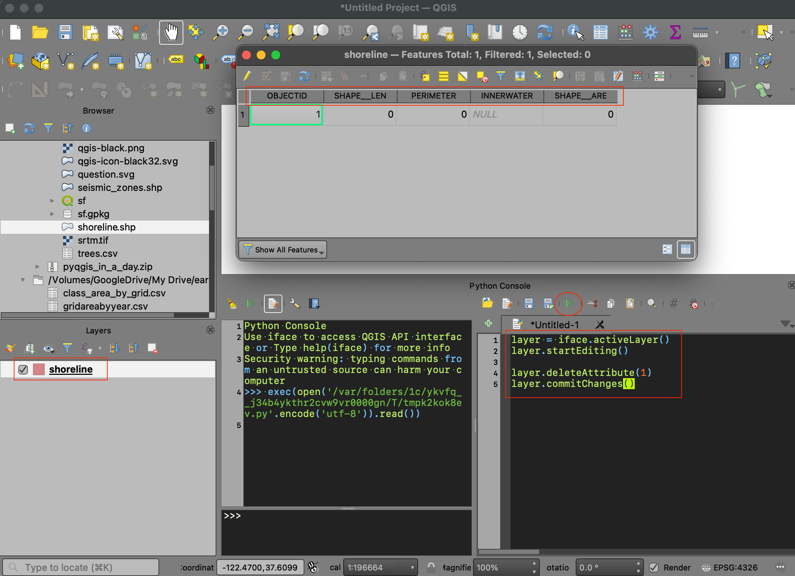
Let’s understand the code step-by-step
layer = iface.activeLayer(): This line uses theifaceobject and runs theactiveLayer()method which returns the currently selected layer in QGIS. We will learn more aboutifacein the QGIS Interface API section. The method returns the reference to the layer which is saved in thelayervariable.layer.startEditing(): This is equivalent to putting the layer in the editing mode.layer.deleteAttribute(1): ThedeleteAttribute()is a method fromQgsVectorLayerclass. It takes the index of the attribute to be deleted. Here we pass on index1for the second attribute. (index 0 is the first attribute)layer.commitChanges(): This method saves the edit buffer and also disables the editing mode.
This gives you a preview of the power of the API. To harness the full power of the PyQGIS API, we must first understand how classes work.
3. Understanding Classes
Before we dive it to PyQGIS, it is important to understand certain concepts related to C++ and Python Classes. Qt as well as QGIS is written in C++ language. Functionality of each Qt/QGIS Widget is implemented as a class - having certain properties and functions. When we use PyQt or PyQGIS classes, it is executing the code in the C++ classes via the python bindings.
Here’s the code to create a class called Car
demonstrating the example we covered in the Classes
and Objects presentation. It creates a class, initializes it to
create new instances and demonstrates the concept of inheritance. A new
class is defined using the word class. All classes have a
function called__init__(), which is always executed when a
new object is being created. There is also the keyword self
which refers to the current instance of the class. The code uses the
super keyword to refer to the parent class.
class Car:
model = 'Civic'
def __init__(self, color, type):
self.color = color
self.type = type
self.started = False
self.stopped = False
def start(self):
print('Car Started')
self.started = True
self.stopped = False
def stop(self):
print('Car Stopped')
self.stopped = True
sefl.started = False
# Instantiate the class
my_car = Car('blue', 'automatic')
print(my_car)
# Call a method
my_car.start()
# Check the value of an instance variable
print('Car Started?', my_car.started)
# Check the value of a class variable
print('Car model', Car.model)
# Inheritance
class Sedan(Car):
def __init__(self, color, type, seats):
super().__init__(color, type)
self.seats = seats
class ElectricSedan(Sedan):
def __init__(self, color, type, seats, range_km):
super().__init__(color, type, seats)
self.range_km = range_km
my_car = Sedan('blue', 'automatic', 5)
print(my_car.color)
print(my_car.seats)
my_car.start()
my_future_car = ElectricSedan('red', 'automatic', 5, 500)
print(my_future_car.color)
print(my_future_car.seats)
print(my_future_car.range_km)
my_future_car.start()4. Using PyQGIS Classes
Let’s start working with PyQGIS classes now. QGIS has classes for the whole range of operations - from building the user interface to doing geoprocessing. We will see how to access these classes via the PyQGIS API.
4.1 Calculating distance using PyQGIS
A basic but important operation in a GIS is the calculation of distance and areas. We will see how you can use PyQGIS APIs to compute distances.
We will compute distance between the following 2 coordinates
QGIS provides the class QgsDistanceArea that has methods
to compute distances and areas.
To use this class, we must create an object by instantiating it.
Looking at the class
documentation, the class constructor doesn’t take any arguments. We
can use the default constructor to create an object and assign it to the
d variable.
The documentation mentions that if a valid ellipsoid has been set for
the QgsDistanceArea, all calculations will be performed using
ellipsoidal algorithms (e.g. using Vincenty’s formulas). As we want to
compute the distance between a pair of latitude/longitudes, we need to
use the ellipsoidal algorithms. Let’s set the ellipsoid
WGS84 for our calculation. We can use the method
setEllipsoid(). Remember, methods should be applied on
objects, and not classes directly.
Tip: All valid ellipsoids can be found by calling
QgsEllipsoidUtils.acronyms()
Now our object d is capable of performing ellipsoidal
distance computations. Browsing through the available methods in the
QgsDistanceArea class, we can see a
measureLine() method. This method takes a list QgsPointXY
objects. We can create these objects from our coordinate pairs and pass
them on to the measureLine() method to get the distance.
The output will be in meters. We divide it by 1000 to convert it to
kilometers.
lat1, lon1 = san_francisco
lat2, lon2 = new_york
# Remember the order is X,Y
point1 = QgsPointXY(lon1, lat1)
point2 = QgsPointXY(lon2, lat2)
distance = d.measureLine([point1, point2])
print(distance/1000)Putting it all together, below is the complete code to calculate the
distance between a pair of coordinates using PyQGIS. When you run the
code in the Python Console of QGIS, all the PyQGIS classes are already
imported. If you are running this code from a script or a plugin, you
must explicitly import the QgsDistanceArea class.
from qgis.core import QgsDistanceArea
san_francisco = (37.7749, -122.4194)
new_york = (40.661, -73.944)
d = QgsDistanceArea()
d.setEllipsoid('WGS84')
lat1, lon1 = san_francisco
lat2, lon2 = new_york
# Remember the order is X,Y
point1 = QgsPointXY(lon1, lat1)
point2 = QgsPointXY(lon2, lat2)
distance = d.measureLine([point1, point2])
print(distance/1000)Exercise 1
Let’s say you want to make a stop at Las Vegas on the way from San Francisco to New York.
Calculate the total ellipsoidal distance considering a stop at Las Vegas.
If your code is correct, you should see the output distance to be
4271.02 kilometers.
4.2 Distance Conversion
The distance returned by the measureLine() method in the
previous section was in meters, and we divided it by 1000 to convert it
to kilometers. Rather than doing this conversion manually, we can use
the PyQGIS API. The QgsDistanceArea class has a method
convertLengthMeasurement() that can convert the measured
distance to any supported unit. The
convertLengthMeasurement() method takes 2 arguments - the
length measured by measureLine() method and the unit to
convert the measurement to. The unit should be a value of the type
QgsUnitTypes.DistanceUnit. The permitted values are defined
in the QgsUnitType
documentation. The code below shows how to convert the measured
distance to Kilometers and Miles.
from qgis.core import QgsDistanceArea
from qgis.core import QgsUnitTypes
san_francisco = (37.7749, -122.4194)
new_york = (40.661, -73.944)
d = QgsDistanceArea()
d.setEllipsoid('WGS84')
lat1, lon1 = san_francisco
lat2, lon2 = new_york
# Remember the order is X,Y
point1 = QgsPointXY(lon1, lat1)
point2 = QgsPointXY(lon2, lat2)
distance = d.measureLine([point1, point2])
print('Distance in meters', distance)
distance_km = d.convertLengthMeasurement(distance, QgsUnitTypes.DistanceKilometers)
print('Distance in kilometers', distance_km)
distance_mi = d.convertLengthMeasurement(distance, QgsUnitTypes.DistanceMiles)
print('Distance in miles', distance_mi)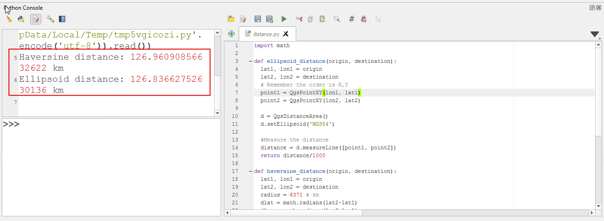
5. Graphical User Interface (GUI) Programming Basics
5.1 Qt and PyQt
Qt is a free and open-source widget toolkit for creating graphical user interfaces as well as cross-platform applications. QGIS is built using the Qt platform. Both Qt and QGIS itself have well-documented APIs that should be used when writing Python code to be run within QGIS.
PyQt is the Python interface to Qt. PyQt provides classes and functions to interact with Qt widgets.
5.2 Building a Dialog Box
Let’s learn how to use PyQt classes to create and interact with GUI elements. Here we will create a simple dialog box that prompts a user for confirmation. You can type the code in the Editor and click Run Script.
The QMessageBox is a PyQt class for creating a dialog
with buttons. To use the class, you create object by
instantiating the class. Here mb is an object,
which is an instance of the QMessageBox class, created
using the default parameters.
type() tells you what is the class of the object
dir returns list of the attributes and methods of any
object
Classes have methods that provide functionality. You can run the
class methods on instance objects. For the QMessageBox
class, setText() method will add a text to the dialog.
Classes also have class attributes which are shared across all
instances. The QMessageBox class has Ok and
Cancel attributes, which can be referred using
QMessageBox.Ok and QMessageBox.Cancel.
mb = QMessageBox()
mb.setText('Click OK to confirm')
mb.setStandardButtons(QMessageBox.Ok | QMessageBox.Cancel)To see the dialog, we need to use the exec() method. The
user input is then captured and saved in the return_value
variable.
The complete code snippet is as follows.Try it out and see the result of your action reflect in the Python Console.
mb = QMessageBox()
mb.setText('Click OK to confirm')
mb.setStandardButtons(QMessageBox.Ok | QMessageBox.Cancel)
return_value = mb.exec()
if return_value == QMessageBox.Ok:
print('You pressed OK')
elif return_value == QMessageBox.Cancel:
print('You pressed Cancel')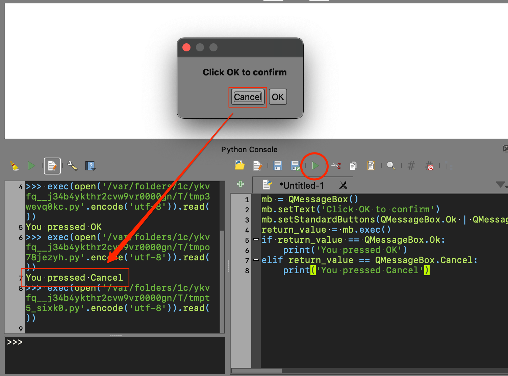
6. Deep Dive into PyQGIS
PyQGIS is the Python interface to QGIS. It is created using SIP and integrates with PyQt.
Fun Fact: Most QGIS class names start with the prefix Qgs. Q is for Qt and gs stands for Gary Sherman - the founder of the QGIS project.
QGIS C++ API documentation is available at https://qgis.org/api/3.28/
QGIS Python API documentation is available at https://qgis.org/pyqgis/3.28/
Both C++ and Python APIs are identical for most part, but certain functions are not available in the Python API. 1
6.1 QGIS Interface API (QgisInterface)
You are ready to dive into the PyQGIS API now. In this section, we
will focus on the QgisInterface class - which provides
methods for interaction with the QGIS environment. When QGIS is running,
a variable called iface is set up to provide an object of
the class QgisInterface to interact with the running QGIS
environment. This interface allows access to the map canvas, menus,
toolbars and other parts of the QGIS application. Python Console and
Plugins can use iface to access various parts of the QGIS
interface.
6.1.1 Change Title of QGIS Main Window
6.1.2 Change Icon of QGIS Main Window
os.path.expanduser('~')returns the path to the home directory of the user.
import os
icon = 'qgis-black.png'
data_dir = os.path.join(os.path.expanduser('~'), 'Downloads', 'pyqgis_masterclass')
icon_path = os.path.join(data_dir, icon)
icon = QIcon(icon_path)
iface.mainWindow().setWindowIcon(icon)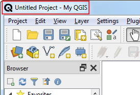
6.1.3 Remove Raster and Vector Menus
vector_menu = iface.vectorMenu()
raster_menu = iface.rasterMenu()
menubar = vector_menu.parentWidget()
menubar.removeAction(vector_menu.menuAction())
menubar.removeAction(raster_menu.menuAction())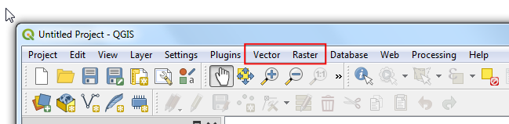

6.1.4 Understanding Signals and Slots
GUI programming requires responding to user’s actions. All objects in
Qt have a mechanism where they can emit a signal when there is a change
in status. i.e. when a user clicks a button, or a window is
closed. As a programmer, you can connect the signal to a slot
(i.e. a python function) which will be called when the signal is
emitted. The general syntax for connecting the signal to a slot is
<object>.<signal>.connect(function).
6.1.5 Add A New Menu Item
A new button or menu item is created using QAction().
Here we create an action and then connect the click signal to a
method that opens a website. 2
import webbrowser
def open_website():
webbrowser.open('https://gis.stackexchange.com')
website_action = QAction('Go to gis.stackexchange')
website_action.triggered.connect(open_website)
iface.helpMenu().addSeparator()
iface.helpMenu().addAction(website_action)
Exercise 2
In the previous example, the alert is displayed in the QGIS message bar as an Info message. Change the type of the message to a Warning message.
Hint: Look at the appropriate method in the QgsMessageBar class
6.1.8 Add New Layers
Data sources are identified by an URI (Uniform Resource Identifier) -
For files on computer the URI is the file path - For databases, the URI
is constructed using the QgsDataSourceUri class and
encodes,the database path, table, username, password etc. - For web
layers, such as WMF/WFS etc, the URI is the web URL
import os
data_dir = os.path.join(os.path.expanduser('~'), 'Downloads', 'pyqgis_masterclass')
filename = 'seismic_zones.shp'
uri = os.path.join(data_dir, filename)
iface.addVectorLayer(uri, 'seismic_zones', 'ogr')
filename = 'sf.gpkg|layername=zoning'
uri = os.path.join(data_dir, filename)
iface.addVectorLayer(uri, 'zoning', 'ogr')
6.1.9 Change name of a Layer
Exercise 3
Write a code snippet that checks the active layer selected by the
user. If the active layer is named zoning, display a
success message in the message bar, else display an error message.

6.2 QGIS Project API (QgsProject)
Another very important QGIS class is QgsProject. This
class is used for all operations in a QGIS project - including
adding/removing map layers, styling, print layouts etc. The
QgsProject is a Singleton Class - meaning
it can have only 1 instance at a time. The instance refers to the
current QGIS project that is loaded. When QGIS starts, a blank project
is created. When you load another project, the existing project is
closed and a new project instance is created. You can get the current
instance of the QgsProject class by calling the
QgsProject.instance() method.
6.2.1 Load a project
import os
data_dir = os.path.join(os.path.expanduser('~'), 'Downloads', 'pyqgis_masterclass')
project = QgsProject.instance()
project_name = 'sf.qgz'
project_path = os.path.join(data_dir, project_name)
project.read(project_path)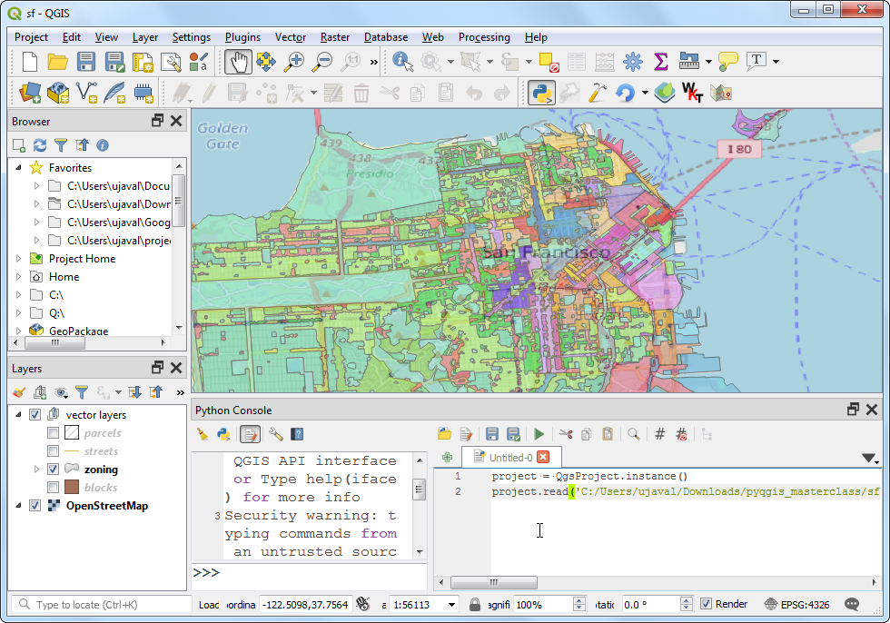
6.2.2 Load Projects using a Dropdown Menu
The code snippet below shows how to create a new toolbar with a label and a drop-down menu. Selecting an item will load the project with that name.

import os
data_dir = os.path.join(os.path.expanduser('~'), 'Downloads', 'pyqgis_masterclass')
projectToolbar = iface.addToolBar('Project Selector')
label = QLabel('Select a project to load', parent=projectToolbar)
projectSelector = QComboBox(parent=projectToolbar)
projectSelector.addItem('sf.qgz')
projectSelector.addItem('places.qgz')
projectSelector.setCurrentIndex(-1)
def loadProject(projectName):
project = QgsProject.instance()
project_path = os.path.join(data_dir, projectName)
project.read(project_path)
projectSelector.currentTextChanged.connect(loadProject)
projectToolbar.addWidget(label)
projectToolbar.addWidget(projectSelector)6.2.3 Create a New Vector Layer
We will now create a temporary memory layer using PyQGIS. Memory layers are not saved to the disk and ideal to store intermediate results. The code snippet below creates a polygon layer with the extent of the current map canvas.
mc = iface.mapCanvas()
extent = mc.extent()
vlayer = QgsVectorLayer('Polygon', 'extent', 'memory')
crs = QgsProject.instance().crs()
vlayer.setCrs(crs)
provider = vlayer.dataProvider()
f = QgsFeature()
geometry = QgsGeometry.fromRect(extent)
f.setGeometry(geometry)
provider.addFeature(f)
vlayer.updateExtents()
QgsProject.instance().addMapLayer(vlayer)Exercise 4
The following code snippet creates a toolbar called CRS
Toolbar with a label, textbox and a button. When the button is
clicked, the function changeCRS is called. Implement this
function so that it changes the CRS of the current project to the EPSG
code entered by the user.
Hint: Use QgsProject.instance().setCrs()
method.

crsToolbar = iface.addToolBar('CRS Toolbar')
label = QLabel('Enter an EPSG Code', parent=projectToolbar)
crsTextBox = QLineEdit('4326', parent=projectToolbar)
crsTextBox.setFixedWidth(80)
button = QPushButton('Go!', parent=projectToolbar)
crsToolbar.addWidget(label)
crsToolbar.addWidget(crsTextBox)
crsToolbar.addWidget(button)
def changeCrs(crsText):
epsgCode = int(crsTextBox.text())
iface.messageBar().pushInfo('Function called', f'You entered {epsgCode}')
# Add code to change the project CRS to the EPSG code
button.clicked.connect(changeCrs)7. Running Python Code at QGIS Launch
It is possible to execute some PyQGIS code every time QGIS starts.
QGIS looks for a file named startup.py in the user’s Python
home directory, and if it is found, executes it. This file is very
useful in customizing QGIS interface with techniques learnt in the
previous section.
If you are running multiple versions of QGIS, a very useful
customization is to display the QGIS version number and name in the main
window. The version name is stored in a global QGIS variable called
qgis_version. We can read that variable and set the main
window’s title with it. We connect this code to the signal
iface.initializationCompleted signal when the main window
is loaded.
Create a new file named startup.py with the following
code. Note the imports at the top - including iface. When
we ran the code snippets in the Python Console, we did not have to
import any modules since they are done automatically when the console
starts. For pyqgis scripts elsewhere, we have to explicitly import the
modules (classes) that we want to use.
from qgis.utils import iface
from qgis.core import QgsExpressionContextUtils
def customize():
version = QgsExpressionContextUtils.globalScope().variable('qgis_version')
title = iface.mainWindow().windowTitle()
iface.mainWindow().setWindowTitle('{} | {}'.format(title,version))
iface.initializationCompleted.connect(customize)This file needs to be copied to the appropriate directory on your system. See QGIS documentation for details on the path for your platform.
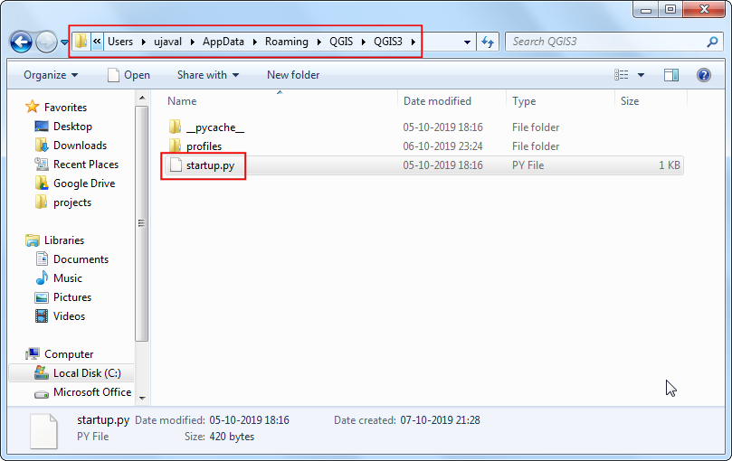
Once you copy the file at that location, restart QGIS. The title bar should now have the QGIS version name in it.
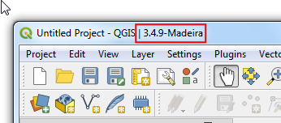
Pro Tip: It is possible to put the
startup.pyfile on a shared drive for enterprise deployment of QGIS customizations. Learn more.
Exercise 5
Trying opening a new project in QGIS after you have restarted GIS
with startup.py file in place. You will notice that the
custom title with the version name is replaced with the default
title.
Make a change to your startup.py so that the
customization is applied even when a new project is loaded.
8. Running Processing Algorithms
While the PyQGIS API providers many functions to work with layers, features, attributes and geometry - it is a much better practice to use the built-in processing algorithms to alter the layers or do any analysis. This will give you better performance and result in much lesser code. Here are some examples on how to use processing algorithms from Python to do vector and raster layer editing. You will find more information about various options and techniques in the article Using processing algorithms from the console of the QGIS User Guide
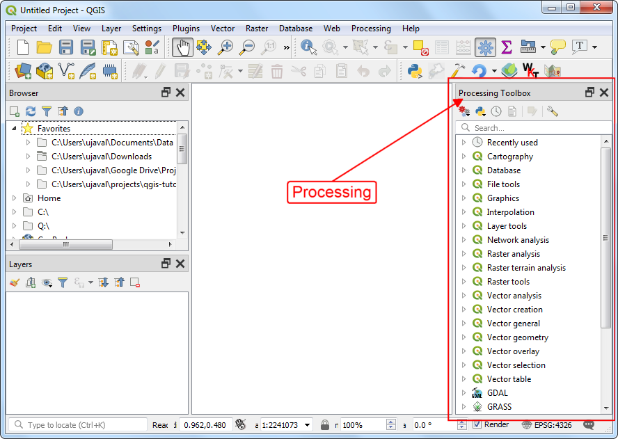
8.1 Creating Hillshade from a DEM
To use any Processing Algorithm via Python, you need to know how to specify all the required parameters. This is easiest to obtain by running the algorithm via the GUI first.
In this section we will learn how to create a hillshade raster from a DEM. We will first carry out the task using QGIS.
- Browse to the data directory and load the
srtm.tiflayer. Search and locate the Processing Toolbox → Raster terrain analysis → Hillshade algorithm from the Processing Toolbox. Double-click to open it.
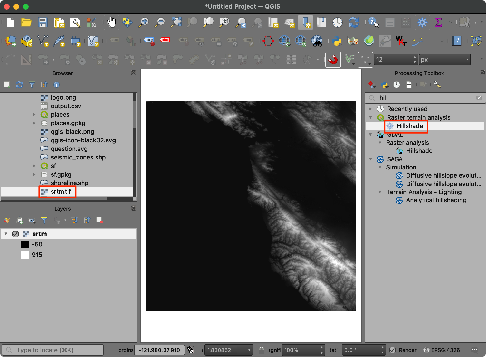
- Select
srtmas the Elevation layer and keep all the other parameters to their default value. Click Run.

- A new
Hillshadelayer will be added to the Layers panel. Now we will locate the Python command for this operation from the Processing History. Go to Processing → History.
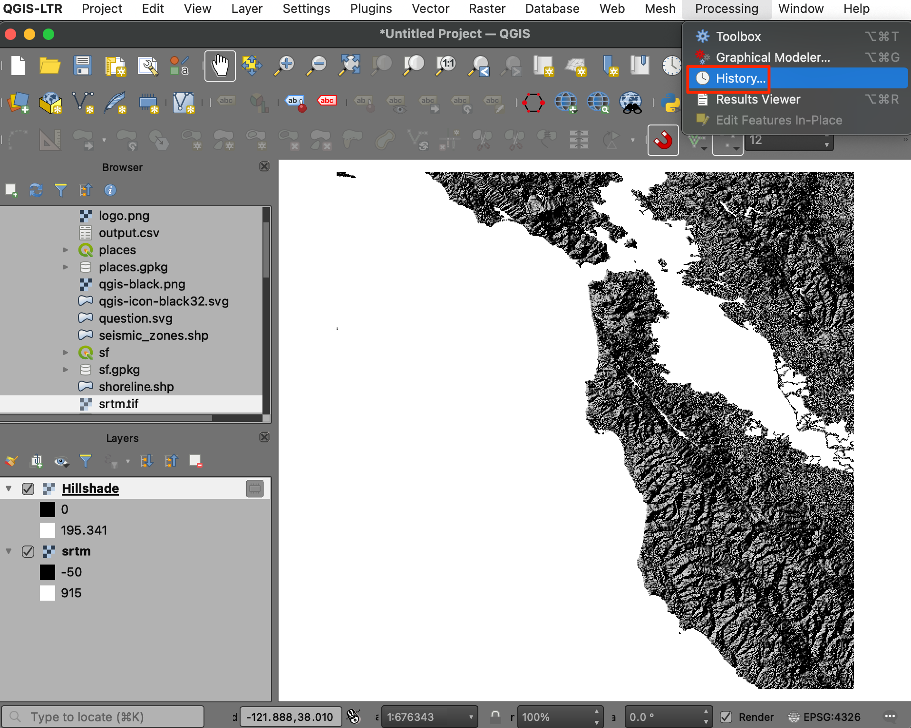
- The first entry in the top panel will show the last algorithm that was ran from the toolbox. Click on it to select it. The full Python command will be shown at the bottom. Copy it.
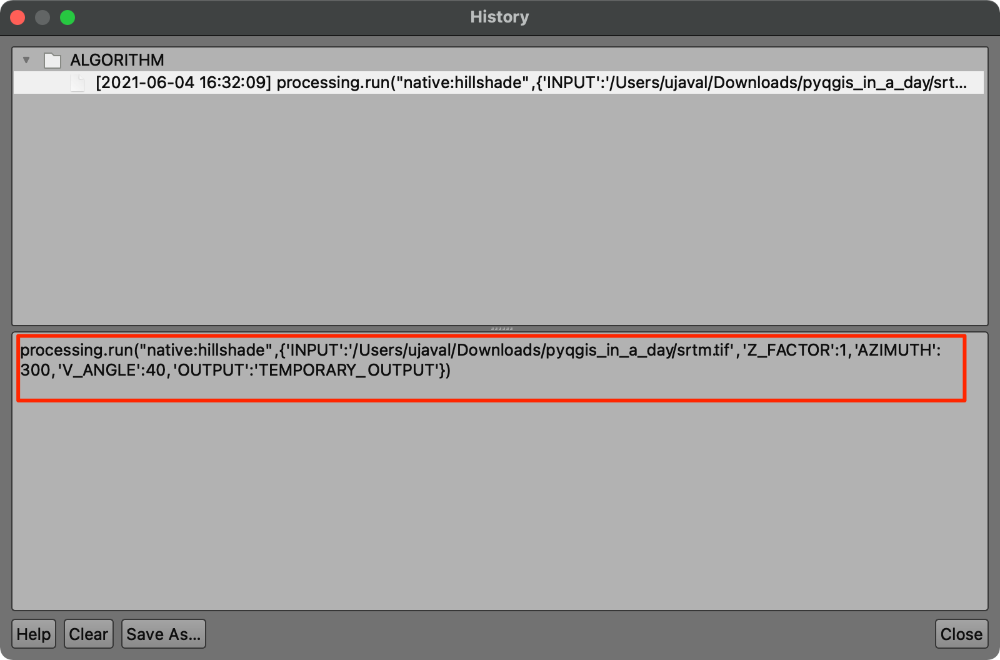
You can now use the parameters in your Python code and replace the
path of the input. Below is the code snippet that runs the same
algorithm from a Python script. Note that we are using the
processing.runAndLoadResults() method that adds the
resulting layer to the canvas.
import os
data_dir = os.path.join(os.path.expanduser('~'), 'Downloads', 'pyqgis_masterclass')
filename = 'srtm.tif'
srtm = os.path.join(data_dir, filename)
iface.addRasterLayer(srtm, 'srtm', 'gdal')
results = processing.runAndLoadResults("native:hillshade",
{'INPUT': srtm,
'Z_FACTOR':2,
'AZIMUTH':300,
'V_ANGLE':40,
'OUTPUT': 'TEMPORARY_OUTPUT'})8.2 Running Multiple Processing Algorithms
We can also chain multiple processing tools to build a script to build a data processing pipeline. In the example below, we will do 2 steps
- Clip
srtm.tifraster using theshoreline.shplayer. - Calculate the hillshade on the clipped raster and load it in QGIS.
Note that we are using the processing.run() method for
the first step. This method calculates the output, but does not load the
result to QGIS. This allows us to carry out multiple processing steps
and not load intermediate layers.
import os
data_dir = os.path.join(os.path.expanduser('~'), 'Downloads', 'pyqgis_masterclass')
filename = 'srtm.tif'
srtm = os.path.join(data_dir, filename)
filename = 'shoreline.shp'
shoreline = os.path.join(data_dir, filename)
results = processing.run("gdal:cliprasterbymasklayer",
{'INPUT':srtm,
'MASK': shoreline,
'OUTPUT':'TEMPORARY_OUTPUT'})
clipped_dem = results['OUTPUT']
results = processing.runAndLoadResults("native:hillshade",
{'INPUT': clipped_dem,
'Z_FACTOR':2,
'AZIMUTH':300,
'V_ANGLE':40,
'OUTPUT': 'TEMPORARY_OUTPUT'})You can also do batch-processing by iterating through multiple layers and running the processing algorithm in a for-loop. Doing it via Python allows you greater flexibility - such as combining the results into a single layer. See Running Processing Algorithms via Python tutorial for a complete example.
Exercise 6
Your data package contains a polygon layer of seismic zones in San
Francisco. We want to calculate the average elevation within each
seismic zone from this layer. The code below reads the vector layer
seismic_zones.shp of seismic zones and the raster layer
srtm.tif containing elevation values. The vector layer
contains some invalid polygons, so we run the
native:fixgeometries algorithm to fix them.
Use the resulting layer with the fixes geometries and calculate Zonal
Statistics algorithm native:zonalstatisticsfb to calculate
the average elevation from the raster layer.
import os
data_dir = os.path.join(os.path.expanduser('~'), 'Downloads', 'pyqgis_masterclass')
vector_layer = 'seismic_zones.shp'
vector_layer_path = os.path.join(data_dir, vector_layer)
raster_layer = 'srtm.tif'
raster_layer_path = os.path.join(data_dir, raster_layer)
# Input vector has invalid geometries
# Fix them first
results = processing.run("native:fixgeometries", {
'INPUT':vector_layer_path,
'METHOD': 0,
'OUTPUT':'TEMPORARY_OUTPUT'})
fixed_vector_layer = results['OUTPUT']
# Run Zonal Statstics and load the resulting layerAssignment
The following assignment is designed to help you practice the skills learnt so far in the course and explore the PyQGIS API.
Your task is to write a PyQGIS Script to show the average value of
the selected raster layer within the current map extent. For example, if
you load the srtm layer from the data package, select it
and click the button - it should calculate and display the average
elevation within the canvas extent. If you zoom/pan the map and click
the button again - it should compute the display the average elevation
within the new extent. Here is the recommended structure for your
script.
- Add a button to the Plugins Toolbar called Show Raster Statistics with an icon of your choice.
- Write a function named
show_statistics()that is called when the button is clicked. - The function should obtain the current extent of the map canvas and calculate the raster statistics.
- Once the statistics are computed, it should display a message in the message bar with the information.
Hint: QgsRasterInterface
class provides a bandStatistics() method for calculating
statistics from a raster band. You can get the reference to the instance
of this class for a raster layer using
layer.dataProvider().

Extra credit if your script also does error checking and displays an error message on the message bar for the following conditions:
- If the user has not selected any layer or the selected layer is not a raster layer, display an error.
- If the current map canvas extent does not have any valid pixels, display an error.

9. Advanced Python Concepts
9.1 Understanding Python Iterators
An Iterator is a type of Python object that contains items that can be iterator upon. They are similar to other objects, like lists - but with a key difference. When you create an iterator, you don’t store all the items in memory. The iterator loads a single item at a time and then fetches the next item when asked for it. This makes it very efficient for reading large amounts of data without having to read the entire dataset. QGIS implements iterators for many different object types.
We will continue to work with the sf.qgz project. Open
the project and select the blocks layer. In the example
below, the result of calling layer.getFeatures() is an
iterator. You can call the next() function to fetch the
next item from the iterator.
layer = iface.activeLayer()
features = layer.getFeatures()
f = next(features)
print(f.attributes())
f = next(features)
print(f.attributes())You can also use for-loops to iterate through an iterator. Here we
look up the Feature ID of each feature using the
id() method and store it in a list.
9.2 List Comprehensions
A common data processing task in Python is to read items from a list or an iterator, doing some processing on each item and creating a new list with the results. The regular way to do this is to first create an empty list, iterate over each item of the existing list, and append the results to the new empty list. Python provides a powerful alternative to this workflow in the form of List Comprehension. The snippet below shows the syntax.
10. Writing Python Console Scripts
We will now see how can we write python scripts, save them and run them within QGIS. A goal of the script is to read the features of a selected vector layer, and write its attributes to a CSV file. We will also see examples of best practices - such as validating inputs, writing files safely and communicating the status to the user.
10.1 Using Pandas
In this section, we will see how to combine PyQGIS with other Python libraries like Pandas.
Open the Python Console and click the Show Editor button.
Copy/paste the following code. Click the Save button and save
the file as save_attributes_pandas.py. The file can be
saved anywhere.
import os
import pandas as pd
data_dir = os.path.join(os.path.expanduser('~'), 'Downloads', 'pyqgis_masterclass')
output_name = 'output.csv'
output_path = os.path.join(data_dir, output_name)
layer = iface.activeLayer()
# Check if a layer is selected
if not layer:
iface.messageBar().pushMessage(
'Please select a layer', level=Qgis.Critical)
# Check if the selected layer is a vector layer
if layer.type() != QgsMapLayer.VectorLayer:
iface.messageBar().pushMessage(
'Please select a vector layer', level=Qgis.Critical)
output_name = 'output.csv'
output_path = os.path.join(data_dir, output_name)
fields = layer.fields()
# Get a list of field names
fieldnames = [field.name() for field in layer.fields()]
# Get a list of attributes for each feature
data = [f.attributes() for f in layer.getFeatures()]
# Create a Pandas DataFrame
df = pd.DataFrame(data, columns=fieldnames)
# Save to file
df.to_csv(output_path, index=False)
iface.messageBar().pushMessage(
'Success:','Output file written at ' + output_path, level=Qgis.Success)Select the blocks layer and run this script by clicking
the Run Script button. The script will process the layer and
write the file at the given location.

10.2 Using PyQGIS Classes
Let’s take the script we wrote above and convert it to use PyQGIS
classes. This is the preferred method while developing scripts that can
be used as Processing algorithms or plugins. We will use the QgsVectorFileWriter
class to create a file in any of the supported vector data formats. Once
we initialize a QgsVectorFileWriter object, we iterate over
the original layer and call the addFeature() method to add
features to the writer.
Open the Python Console and click the Show Editor button.
Copy/paste the following code. Click the Save button and save
the file as save_attributes_console.py. The file can be
saved anywhere.

import os
import time
data_dir = os.path.join(os.path.expanduser('~'), 'Downloads', 'pyqgis_masterclass')
layer = iface.activeLayer()
# Check if a layer is selected
if not layer:
iface.messageBar().pushMessage('Please select a layer', level=Qgis.Critical)
# Check if the selected layer is a vector layer
if layer.type() != QgsMapLayer.VectorLayer:
iface.messageBar().pushMessage('Please select a vector layer', level=Qgis.Critical)
# Define parameters for QgsVectorFileWriter
output_name = 'output.csv'
output_path = os.path.join(data_dir, output_name)
# We will use QgsVectorFileWriter.create() method
# It takes the following parameters
# fileName: Path to the file
# fields: Fields to write
# geometryType: geometry type of output file
# srs: CRS of the output file
# transformContext: Datum transformation settings
# options: Save Options such as format, encoding etc.
# Define the options for saving the layer
save_options = QgsVectorFileWriter.SaveVectorOptions()
save_options.driverName = 'CSV'
save_options.fileEncoding = 'UTF-8'
# We can also add some format-specific layer options
# These come from GDAL/OGR
# https://gdal.org/drivers/vector/csv.html
save_options.layerOptions = ['SEPARATOR=COMMA']
# Create the writer
writer = QgsVectorFileWriter.create(
fileName=output_path,
fields=layer.fields(),
geometryType=QgsWkbTypes.NoGeometry,
srs=layer.crs(),
transformContext=transform_context,
options=save_options)
# Check if we were able to create the writer
if writer.hasError() != QgsVectorFileWriter.NoError:
iface.messageBar().pushMessage(
'Error:', writer.errorMessage, level=Qgis.Critical)
# Add features
for f in layer.getFeatures():
writer.addFeature(f)
# delete the writer to flush features to disk
del writer
iface.messageBar().pushMessage(
'Success:','Output file written at ' + output_path, level=Qgis.Success)Select the blocks layer and run this script by clicking
the Run Script button. The script will process the layer and
write the file at the given location.
11. Processing Scripts
We saw how to write a Python script in the QGIS Python Console Code Editor. But there is another way - and it is the preferred approach to write scripts. Whenever you are writing a new script, consider using the built-in Processing Framework. This has several advantages. First, taking user input and writing output files is far easier because Processing Framework offers standardized user interface for these. Second, having your script in the Processing Toolbox also allows it to be part of any Processing Model or be run as a Batch job with multiple inputs. This tutorial will show how to write a custom python script that can be part of the Processing Framework in QGIS.
We will now see how the Python Console script can be converted to a Processing script.
11.1 Writing a Processing Script
To create a new processing script, go to Processing → Processing Toolbox. Click the Scripts button and select Create New Script...

Copy/paste the following code into the Processing Script Editor.
save_attributes_processing.py
from PyQt5.QtCore import QCoreApplication
from qgis.core import (QgsProcessing,
QgsProcessingAlgorithm,
QgsProcessingParameterFeatureSource,
QgsProcessingParameterFileDestination,
QgsWkbTypes)
class SaveAttributesAlgorithm(QgsProcessingAlgorithm):
"""Saves the attributes of a vector layer to a CSV file."""
OUTPUT = 'OUTPUT'
INPUT = 'INPUT'
def initAlgorithm(self, config=None):
self.addParameter(
QgsProcessingParameterFeatureSource(
self.INPUT,
self.tr('Input layer'),
[QgsProcessing.TypeVectorAnyGeometry]
)
)
# We add a file output of type CSV.
self.addParameter(
QgsProcessingParameterFileDestination(
self.OUTPUT,
self.tr('Output File'),
'CSV files (*.csv)',
)
)
def processAlgorithm(self, parameters, context, feedback):
source = self.parameterAsSource(
parameters,
self.INPUT,
context)
sink, output = self.parameterAsSink(
parameters,
self.OUTPUT,
context,
source.fields(),
QgsWkbTypes.NoGeometry,
source.sourceCrs()
)
fieldnames = [field.name() for field in source.fields()]
# Compute the number of steps to display within the progress bar and
# get features from source
total = 100.0 / source.featureCount() if source.featureCount() else 0
features = source.getFeatures()
for current, f in enumerate(features):
# Stop the algorithm if cancel button has been clicked
if feedback.isCanceled():
break
# Add a feature in the sink
sink.addFeature(f)
# Update the progress bar
feedback.setProgress(int(current * total))
return {self.OUTPUT: output}
def name(self):
return 'save_attributes'
def displayName(self):
return self.tr('Save Attributes As CSV')
def group(self):
return self.tr(self.groupId())
def groupId(self):
return ''
def tr(self, string):
return QCoreApplication.translate('Processing', string)
def createInstance(self):
return SaveAttributesAlgorithm()
By now, you must be familiar with the code in the
processAlgorithm() method. This method contains the main
logic of the script that gets executed when the user clicks the
Run button. Here we are creating a new class called
SaveAttributesAlgorithm. As this is a processing script, we
must inherit from the QgsProcessingAlgorithm class. The
initAlgorithm() method is called to set-up the inputs and
the outputs. There are other methods that set the algorithm name and
group.
Click the Save Script button and save the script as
save_attributes_algorithm.py. This script must be saved
inside the {profile folder}/processing/scripts/ directory
so it can be loaded when QGIS starts.
Once saved, the algorithm will appear in the Processing Toolbox under Scripts → Save Attributes As CSV. Double-click to launch it. You will see the standard processing algorithm dialog where the user can select inputs and outputs easily. Progress bar is shown correctly and the execution also stops if the user presses the Cancel button. If the large is large and the algorithm would take time to process it, the user can also close the window and the algorithm will continue to run in the background.
You can review additional information and tips in the Writing new Processing algorithms as Python scripts section of the QGIS User Guide.
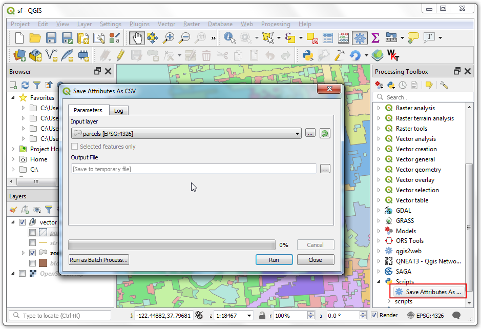
12. Writing Plugins
Plugins are a great way to extend the functionality of QGIS. You can write plugins using Python that can range from adding a simple button to sophisticated tool-kits. There are 2 broad categories of python plugins - Processing Plugins and GUI Plugins. We will cover both in this section.
There is a plugin named Plugin Builder that can help you generate a starter plugin. I have published step-by-step instructions for both GUI plugins and Processing Plugins using the Plugin Builder method. While this method gives you an easy way to have a functional plugin, it is not the ideal way to learn plugin development. I prefer starting from a minimal template and adding elements as and when needed. Here we will learn the basics of plugin framework using a minimal plugin and learn how to add various element to make it a full plugin.
12.1 A Minimal Plugin
Plugins are much more integrated into the QGIS system than Python Scripts. They are managed by Plugin Manager and are initialized when QGIS starts. To understand the required structure, let’s see what a minimal plugin looks like. You can learn more about this structure at QGIS Minimalist Plugin Skeleton.
We will be the same script for saving attributes of a vector layer
and convert it to a plugin. The first requirement for plugins is a file
called metadata.txt. This file contains general info,
version, name and some other metadata used by plugins website and plugin
manager.
metadata.txt
[general]
name=Save Attributes
description=This plugin saves the attributes of the selected vector layer as a CSV file
version=1.0
qgisMinimumVersion=3.0
author=Ujaval Gandhi
email=ujaval@spatialthoughts.comSecond is the file that contains the main logic of the plugin. It
must have __init__() method that gives the plugin access to
the QGIS Interface (iface). The initGui() method is called
when the plugin is loaded and unload() method which is
called when the plugin is unloaded. For now, we are creating a minimal
plugin that just add a button and a menu entry that displays message
when clicked.
save_attributes.py
import os
import sys
import inspect
from PyQt5.QtWidgets import QAction
from PyQt5.QtGui import QIcon
cmd_folder = os.path.split(inspect.getfile(inspect.currentframe()))[0]
class SaveAttributesPlugin:
def __init__(self, iface):
self.iface = iface
def initGui(self):
icon = os.path.join(os.path.join(cmd_folder, 'logo.png'))
self.action = QAction(QIcon(icon), 'Save Attributes as CSV', self.iface.mainWindow())
self.action.triggered.connect(self.run)
self.iface.addPluginToMenu('&Save Attributes', self.action)
self.iface.addToolBarIcon(self.action)
def unload(self):
self.iface.removeToolBarIcon(self.action)
self.iface.removePluginMenu('&Save Attributes', self.action)
del self.action
def run(self):
self.iface.messageBar().pushMessage('Hello from Plugin')Third file is called __init__.py which is the starting
point of the plugin. It imports the plugin class created in the second
file and creates an instance of it.
__init__.py
from .save_attributes import SaveAttributesPlugin
def classFactory(iface):
return SaveAttributesPlugin(iface)Create these 3 files and put them in a folder named
save_attributes. Copy the logo.png file from
<home folder>/Downloads/pyqgis_masterclass/logo.png
to this folder. Copy the folder to the python plugins directory at
{profile folder}/python/plugins.

Restart QGIS. Go to Plugins → Manage and Install plugins… → Installed and enable the Save Attributes plugin. You will see the menu entry and the toolbar icon from the plugin.
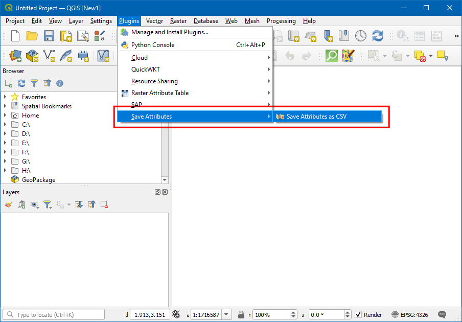
Now the Hello from Plugin message is displayed.

Exercise 8
Take the minimal plugin template from above and build a new plugin called Show Time. This plugin will add a button to the Plugin Toolbar which will display the current time when clicked. The code to add such a button is already covered in the Add a button to a toolbar section.
12.2 Processing Plugin
The new and preferred way to write plugins in QGIS is using the Processing Framework. It removes the need for you to design the user interface. The resulting plugin integrates seamlessly in the Processing Toolbox and is inoperable with other processing algorithms.
Let’s take the minimal plugin and see what is required to make it a functional processing plugin. We need 2 additional files. One to define the processing algorithm and another to define a new processing provider.
The processing algorithm file is identical to the script we wrote
earlier. Create a new file called
save_attributes_algorithm.py with the following
contents.
save_attributes_algorithm.py
from PyQt5.QtCore import QCoreApplication
from qgis.core import (QgsProcessing,
QgsProcessingAlgorithm,
QgsProcessingParameterFeatureSource,
QgsProcessingParameterFileDestination,
QgsWkbTypes)
class SaveAttributesAlgorithm(QgsProcessingAlgorithm):
"""Saves the attributes of a vector layer to a CSV file."""
OUTPUT = 'OUTPUT'
INPUT = 'INPUT'
def initAlgorithm(self, config=None):
self.addParameter(
QgsProcessingParameterFeatureSource(
self.INPUT,
self.tr('Input layer'),
[QgsProcessing.TypeVectorAnyGeometry]
)
)
# We add a file output of type CSV.
self.addParameter(
QgsProcessingParameterFileDestination(
self.OUTPUT,
self.tr('Output File'),
'CSV files (*.csv)',
)
)
def processAlgorithm(self, parameters, context, feedback):
source = self.parameterAsSource(
parameters,
self.INPUT,
context)
sink, output = self.parameterAsSink(
parameters,
self.OUTPUT,
context,
source.fields(),
QgsWkbTypes.NoGeometry,
source.sourceCrs()
)
fieldnames = [field.name() for field in source.fields()]
# Compute the number of steps to display within the progress bar and
# get features from source
total = 100.0 / source.featureCount() if source.featureCount() else 0
features = source.getFeatures()
for current, f in enumerate(features):
# Stop the algorithm if cancel button has been clicked
if feedback.isCanceled():
break
# Add a feature in the sink
sink.addFeature(f)
# Update the progress bar
feedback.setProgress(int(current * total))
return {self.OUTPUT: output}
def name(self):
return 'save_attributes'
def displayName(self):
return self.tr('Save Attributes As CSV')
def group(self):
return self.tr(self.groupId())
def groupId(self):
return ''
def tr(self, string):
return QCoreApplication.translate('Processing', string)
def createInstance(self):
return SaveAttributesAlgorithm()Next, we need to define a new processing provider. Create a new file
save_attributes_provider.py with the following content.
save_attributes_provider.py
import os
import inspect
from PyQt5.QtGui import QIcon
from qgis.core import QgsProcessingProvider
from .save_attributes_algorithm import SaveAttributesAlgorithm
class SaveAttributesProvider(QgsProcessingProvider):
def __init__(self):
QgsProcessingProvider.__init__(self)
def unload(self):
pass
def loadAlgorithms(self):
self.addAlgorithm(SaveAttributesAlgorithm())
def id(self):
return 'save_attributes'
def name(self):
return self.tr('Save Attributes')
def icon(self):
cmd_folder = os.path.split(inspect.getfile(inspect.currentframe()))[0]
icon = QIcon(os.path.join(os.path.join(cmd_folder, 'logo.png')))
return icon
def longName(self):
return self.name()We now make changes to the existing save_attributes.py
file to import and initialize the new processing provider. Change the
contents of the file to the following
save_attributes.py
import os
import sys
import inspect
from PyQt5.QtWidgets import QAction
from PyQt5.QtGui import QIcon
from qgis.core import QgsProcessingAlgorithm, QgsApplication
import processing
from .save_attributes_provider import SaveAttributesProvider
cmd_folder = os.path.split(inspect.getfile(inspect.currentframe()))[0]
class SaveAttributesPlugin:
def __init__(self, iface):
self.iface = iface
def initProcessing(self):
self.provider = SaveAttributesProvider()
QgsApplication.processingRegistry().addProvider(self.provider)
def initGui(self):
self.initProcessing()
icon = os.path.join(os.path.join(cmd_folder, 'logo.png'))
self.action = QAction(QIcon(icon), 'Save Attributes as CSV', self.iface.mainWindow())
self.action.triggered.connect(self.run)
self.iface.addPluginToMenu('&Save Attributes', self.action)
self.iface.addToolBarIcon(self.action)
def unload(self):
QgsApplication.processingRegistry().removeProvider(self.provider)
self.iface.removeToolBarIcon(self.action)
self.iface.removePluginMenu('&Save Attributes', self.action)
del self.action
def run(self):
processing.execAlgorithmDialog('save_attributes:save_attributes')The plugin folder should look like below.
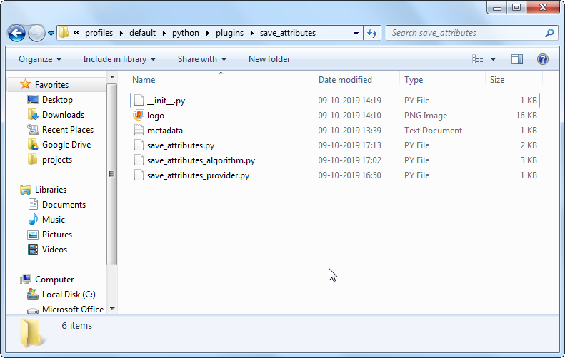
Now let’s reload the plugin and see what it looks like. This is a
helper plugin which allows iterative development of plugins. Using this
plugin, you can change your plugin code and have it reflected in QGIS
without having to restart QGIS every time. Find and install the
Plugin Reloader plugin. Once installed, go to
Plugin → Plugin Reloader → Choose a plugin to be
reloaded. Select save_attributes in the Configure
Plugin reloader dialog.

Once reloaded, you can click on the toolbar button or Plugin → Save Attributes → Save Attributes As CSV to launch the processing algorithm.
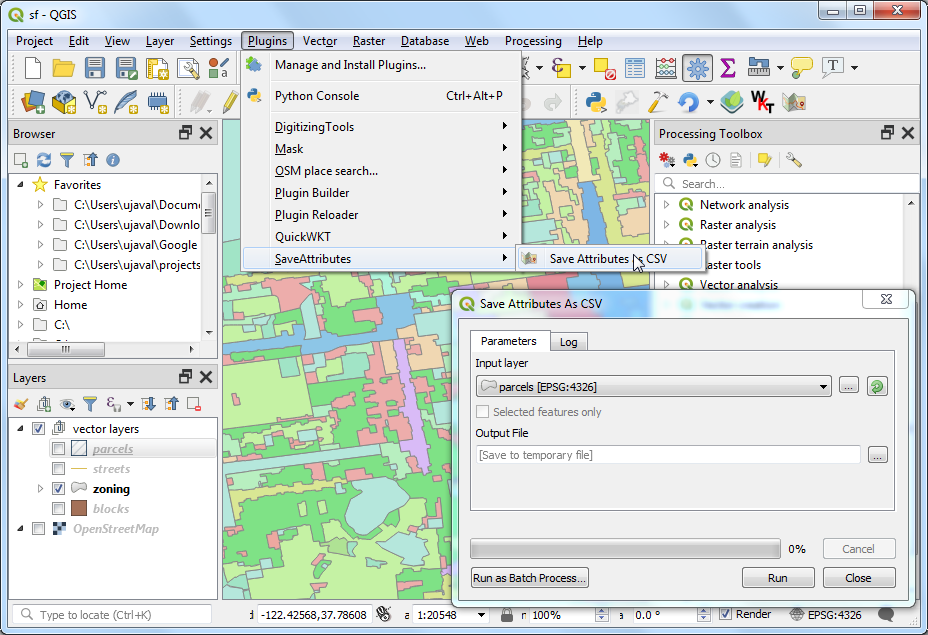
13. Writing Standalone Python Scripts
Having the python script run within QGIS is useful and desired most of the time. But there is a way to write python scripts that run on your system without QGIS being open. Ability to run PyQGIS scripts in a headless mode allows you to automate your workflow and run it on a server without human intervention. Let’s use some QGIS processing algorithms to carry out zonal statistics using a standalone python script.
Create a new file with the code below and save it as
zonal_stats.py.
import os
from qgis.core import QgsApplication
qgs = QgsApplication([], False)
qgs.initQgis()
import processing
from processing.core.Processing import Processing
Processing.initialize()
data_dir = os.path.join(os.path.expanduser('~'), 'Downloads', 'pyqgis_masterclass')
vector_layer = 'seismic_zones.shp'
vector_layer_path = os.path.join(data_dir, vector_layer)
raster_layer = 'srtm.tif'
raster_layer_path = os.path.join(data_dir, raster_layer)
# Input vector has invalid geometries
# Fix them first
results = processing.run("native:fixgeometries", {
'INPUT':vector_layer_path,
'METHOD': 0,
'OUTPUT':'TEMPORARY_OUTPUT'})
fixed_vector_layer = results['OUTPUT']
# Run Zonal Statistics
# Save output to a geopackage
output_name = 'seismic_zones_with_elevation.gpkg'
output_path = os.path.join(data_dir, output_name)
processing.run("native:zonalstatisticsfb", {
'INPUT': fixed_vector_layer,
'INPUT_RASTER': raster_layer_path,
'RASTER_BAND':1,
'COLUMN_PREFIX':'elevation_',
'STATISTICS':[2],
'OUTPUT':output_path})
print('Output Layer Created', output_path)
qgs.exitQgis()You will notice that the script has a few notable parts. First there
is the import statement at the top, to explicitly import the required
modules. Next, we create an instance of the QgsApplication
class and run initQis() method to load the QGIS data
providers and layer registry. We also import the Processing
module and initialize it. Finally we call exitQgis() to
remove them from memory. We have hard-coded the path to the input layers
but they can easily be taken as command-line flags using Python’s argparse
module. Also we don’t have the QGIS GUI, we have no way of displaying
the messages, so we remove those statements.
When you run the script within QGIS, all the paths to QGIS libraries and environment variables are already set and python is able to find and use it. But when you run the script outside of QGIS, you need to set them yourself. Also if you are using Processing Algorithms, you need to make sure the path to core plugin folder is included in the PYTHONPATH environment variable.
Our recommended environment setup takes care of all the requirements and allows you to run PyQGIS scripts easily. The next sections describe this seup and show youhow to run the script on various platforms.
You may need to change these paths slightly based on where QGIS is installed. The following scripts assume you are running QGIS-LTR installed at the default location.
Windows Configuration
On Windows, you can do this using a batch file. Create a new file
named run_script.bat with the following code. Make sure to
save it in the same directory.
@echo off
:: If you get an error, check that the folder below exists.
set OSGEO4W_ROOT=C:\OSGeo4W
:: The following script will set all the required environment variables.
call "%OSGEO4W_ROOT%\bin\o4w_env.bat"
:: If you are not using QGIS LTR version, change 'qgis-ltr' to 'qgis' in all lines below
set PATH=%OSGEO4W_ROOT%\bin;%OSGEO4W_ROOT%\apps\qgis-ltr\bin;C:\OSGeo4W64\apps\Qt5\bin;%PATH%
set PYTHONPATH=%OSGEO4W_ROOT%\apps\qgis-ltr\python;%OSGEO4W_ROOT%\apps\qgis-ltr\python\plugins;%PYTHONPATH%
set QGIS_PREFIX_PATH=%OSGEO4W_ROOT%\apps\qgis-ltr
set QT_QPA_PLATFORM_PLUGIN_PATH=%OSGEO4W_ROOT%\apps\Qt5\plugins
:: Verify that the correct python3 binary is being used
for /f %%i in ('where python3') do set current_python=%%i
echo Using python3 from %current_python%
:: Finally run the script
python3 zonal_stats.pyOpen the command prompt, browse to the directory with the above
files, type run_script.bat and press Enter.
You can also just double-click the
run_script.batto run it, but you will not see any error or success messages. So it is always a good idea to run the script from the shell.
The script will run and produce the output at the given path.

The resulting vector layer has an additional column containing the statistics from the raster.

MacOS Configuration
On MacOS, you can set the required environment variables and run the
script using a shell script. Create a file named
run_script.sh and save it in the same directory as the
script.
OLD_PATH=$PATH
OLD_PYTHONPATH=$PYTHONPATH
QGIS_VERSION="QGIS-LTR"
export PATH=/Applications/$QGIS_VERSION.app/Contents/MacOS/bin:$PATH
export PYTHONPATH=/Applications/$QGIS_VERSION.app/Contents/Resources/python/:/Applications/$QGIS_VERSION.app/Contents/Resources/python/plugins
export QGIS_PREFIX_PATH=/Applications/$QGIS_VERSION.app/Contents/MacOS
export QT_QPA_PLATFORM_PLUGIN_PATH=/Applications/$QGIS_VERSION.app/Contents/PlugIns/platforms/
export DYLD_INSERT_LIBRARIES=/Applications/$QGIS_VERSION.app/Contents/MacOS/lib/libsqlite3.dylib
echo "Using python3 from $(which python3)"
python3 zonal_stats.py
# restore and clean up
export PATH=$OLD_PATH
export PYTHONPATH=$OLD_PYTHONPATH
unset QT_QPA_PLATFORM_PLUGIN_PATH
unset DYLD_INSERT_LIBRARIESOpen a Terminal and browse to the directory with the script. Type
bash run_script.sh and press enter. The script will run and
produce the output at the given path.
14. QGIS Actions
Actions in QGIS provide a quick and easy way to trigger custom behavior in response to a user’s action - such as click on a feature in the canvas or an attribute value in the attribute table. Actions are defined for a layer and are saved in QGIS projects. This makes actions the easiest way to add and distribute QGIS customizations without having to write plugins.
14.1 Hello World
Let’s get started by learning the basics of QGIS Actions. We will create an action that takes a layer of all countries in the world and allows you to extract any country polygon by clicking on it.
- Open QGIS. QGIS comes with a few hidden Easter Eggs that can be triggered by typing a keyword in the Coordinate box at the bottom of the main window. While many of these are for fun, some provide useful functionality. One such hidden feature is the ability to load a world map by typing a keyword. Enter the keyword world into the coordinate box at the bottom of the QGIS window rm and click Enter.
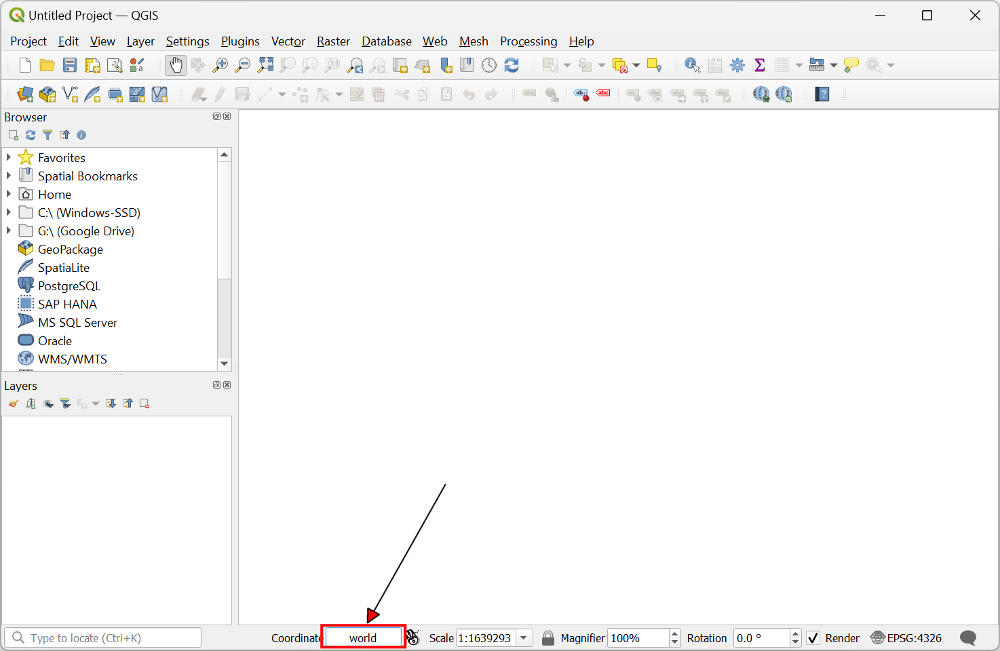
- A new layer named
World Mapwill be added to the Layers panel. This layer is the Admin0 - Countries boundaries dataset from Natural Earth. Let’s define an action on this layer. Right-click the layer and select Properties.
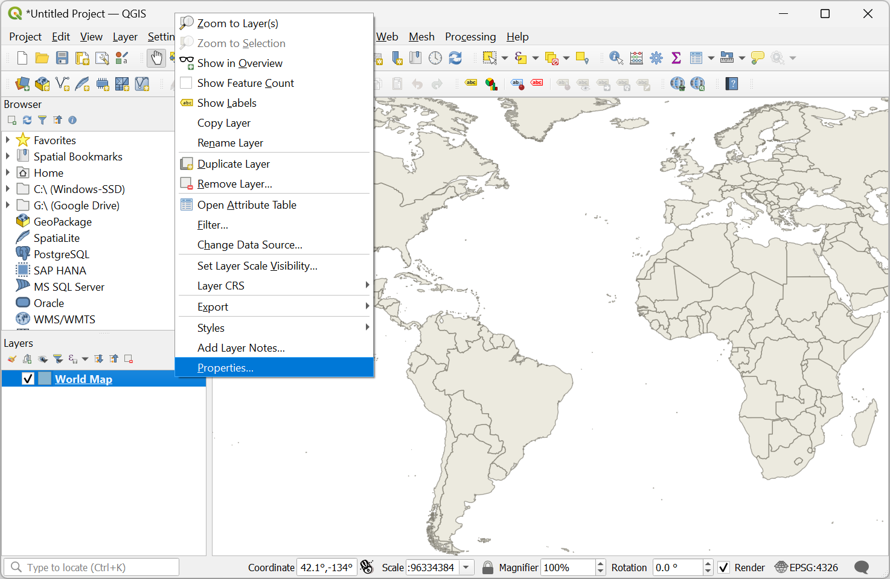
- Switch to the Actions tab and click the Add a new action (+) button.

- Select Python as the Type. Enter Hello World as the Description. This will be the name of the action as it appears in various menu items. Leave the Action Scopes to the default selected values of Feature and Canvas. Under the Action Text enter the following Python code and click OK.

- Click OK again to get back to the main QGIS Canvas. We now
have an action that will print
Hello Worldwhen we click on a feature. To see the output, open the Python Console from Plugins → Python Console. Locate the Actions button on the Attributes Toolbar. Click the dropdown menu next to it and select Hello World.

- Once the action is selected, click on any feature from the layer. You will see Hello World printed in the console.

- You now know how to define and trigger a Python action. Let’s make
the action more useful. Instead of printing a static text, let’s modify
the action to print the name of the country where we clicked. Open the
Attribute Table of the
World Maplayer. You will notice that the NAME attribute contains the country names.

- Right click the
World Maplayer and select Properties. From the Actions tab, double click the already defined Hello World action.
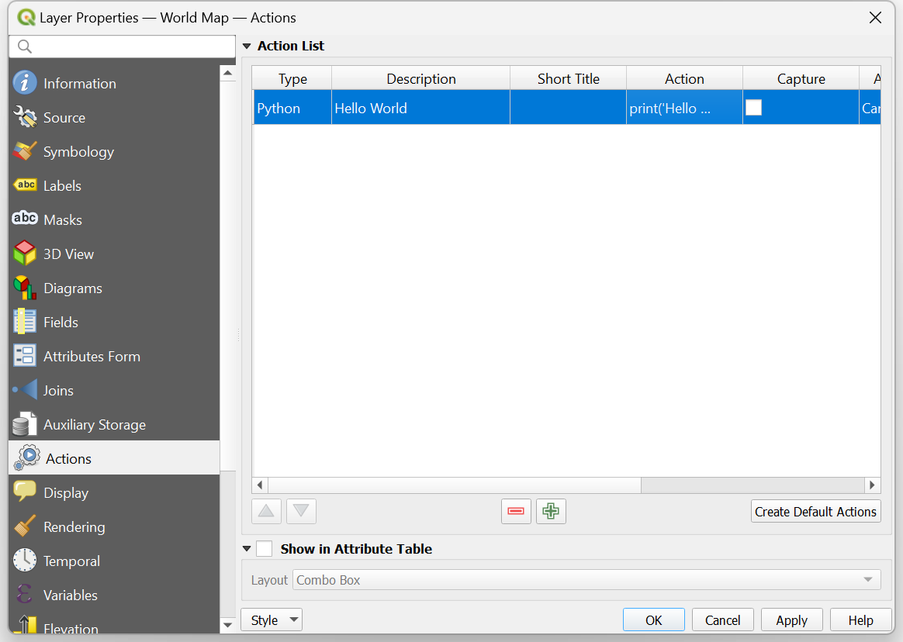
- Our action is triggered by clicking on a feature and we can access the attributes of that feature. Select the NAME attribute and click Insert.
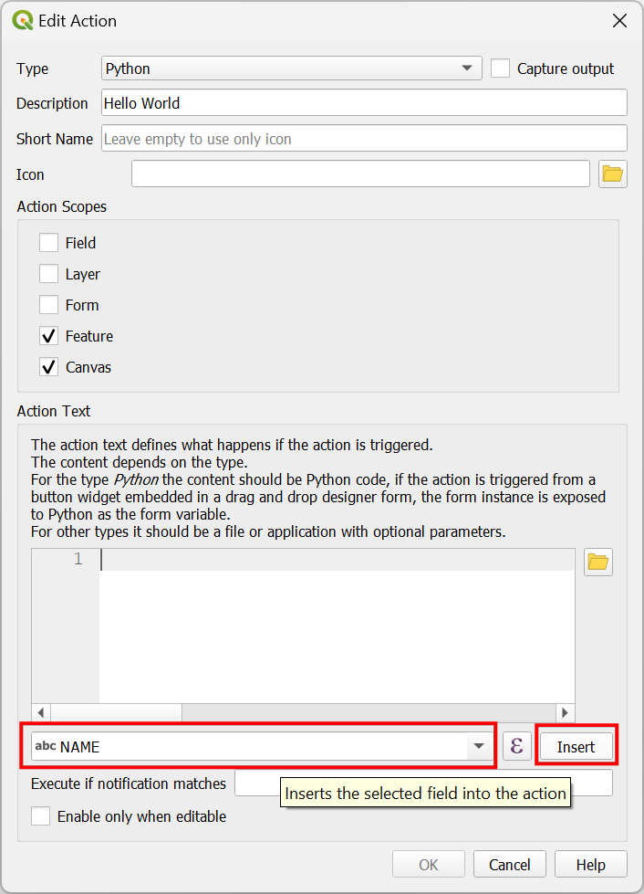
- You will see the value
[%NAME%]entered in the Action Text text box. This is a special expression syntax which indicates that the value surrounded by[%and%]will be replaced with the value of the attribute from the feature when the action is triggered.

- Update the code to print the attribute value as below.

- Click OK and get back to the main window. Select the action and click on any feature. You will now see the name of the country printed in the console.

- Along with all the attributes of the clicked feature, we also have
access to other project and layer variables. Update the code as below to
print the values of the feature id and layer id along with the value of
the
NAMEattribute. Note that we are using the Python f-strings for formatting the output.
feature_name = '[%NAME%]'
feature_id = [%$id%]
layer_id = '[%@layer_id%]'
print(f'feature name: {feature_name}')
print(f'feature id: {feature_id}')
print(f'layer id: {layer_id}')
- Click OK and try the action again. This time you will see the feature id and layer id printed along with the feature name.

- Now you know how to access the
@layer_idand$idvalues of the current feature. We can now use it to extract the current feature and create a new layer from it. Replace the Action Text with the following code which usesQgsFeatureSource.materialize()method to create a new memory based vector layer with the query containing the feature id.
feature_name = '[%NAME%]'
feature_id = [%$id%]
layer_id = '[%@layer_id%]'
layer = QgsProject.instance().mapLayer(layer_id)
new_layer = layer.materialize(
QgsFeatureRequest().setFilterFids([feature_id]))
new_layer.setName(feature_name)
QgsProject.instance().addMapLayer(new_layer)
- Go back to the main Canvas and close the Python Console. Select the Hello World action and click on any feature. You will see a new layer added to the Layers panel that contains the feature. Really useful!
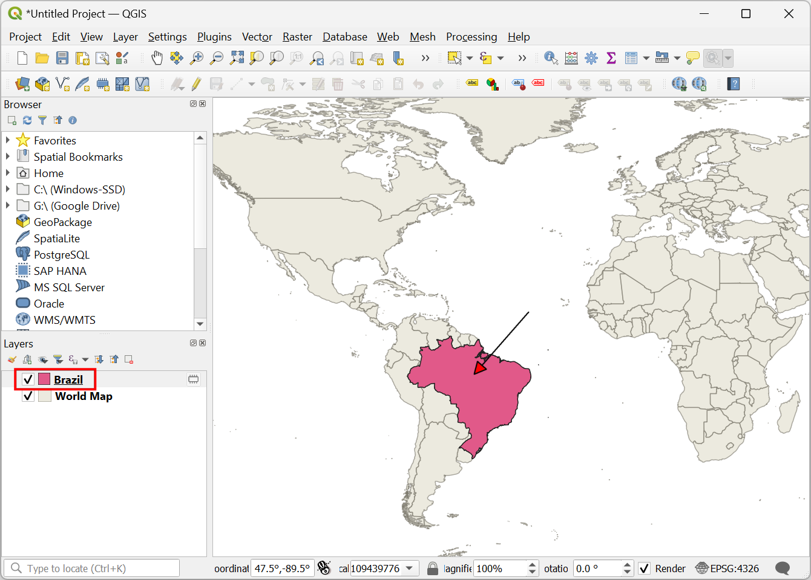
- We have a small problem. As the new layer is created and added to
the Layers panel, it becomes the active layer. To trigger the
action again, we have to select the
World Maplayer again. To prevent this, we can useQgisInterface.setActiveLayer()method to set the current layer as the active layer. We importifacein the code to access the current instance of theQgisInterfaceclass.
from qgis.utils import iface
feature_name = '[%NAME%]'
feature_id = [%$id%]
layer_id = '[%@layer_id%]'
layer = QgsProject.instance().mapLayer(layer_id)
new_layer = layer.materialize(
QgsFeatureRequest().setFilterFids([feature_id]))
new_layer.setName(feature_name)
QgsProject.instance().addMapLayer(new_layer)
iface.setActiveLayer(layer)
- Now you are able to click around and extract multiple countries without having to manually switch layers.
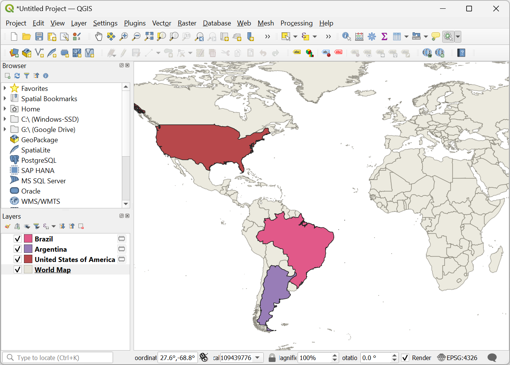
14.2 Selecting Neighbors
In this section, we will work with a dataset of US States and implement QGIS Actions for selecting easily selecting neighbors of any state.
- Locate the
neighbors.gpkgfrom the data package in the Browser panel. Expand it and click on theneighbors.qgzproject to open it.
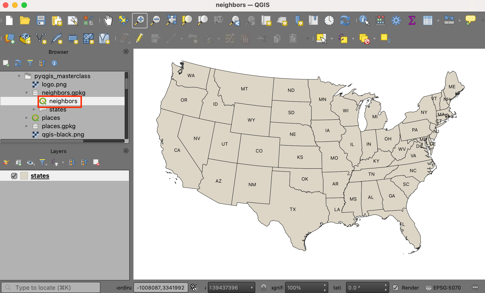
- Right-click the
stateslayer and select Properties.
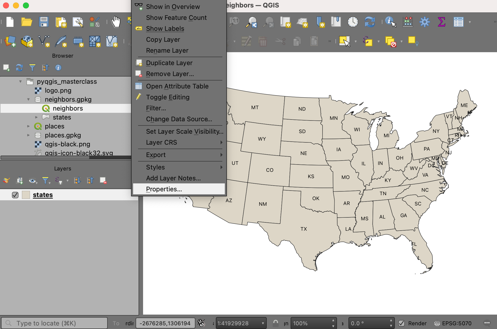
- Switch to the Actions tab and click the Add a new action (+) button. Select Python as the Type. Enter Select First-degree Neighbors as the Description. Leave the Action Scopes to the default selected values of Feature and Canvas. Under the Action Text enter the following Python code and click OK. Click OK again to get back to the main QGIS Canvas.
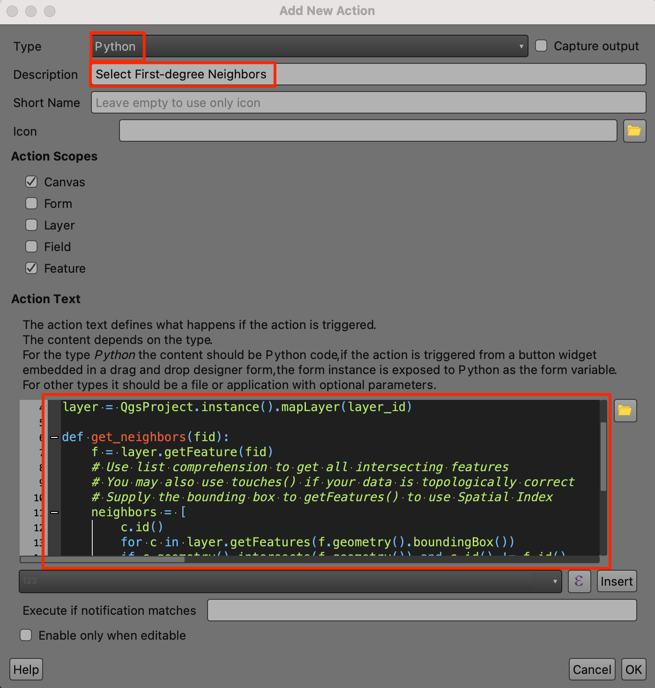
layer_id = '[%@layer_id%]'
fid = [% $id %]
layer = QgsProject.instance().mapLayer(layer_id)
def get_neighbors(fid):
f = layer.getFeature(fid)
# Use list comprehension to get all intersecting features
# You may also use touches() if your data is topologically correct
# Supply the bounding box to getFeatures() to use Spatial Index
neighbors = [
c.id()
for c in layer.getFeatures(f.geometry().boundingBox())
if c.geometry().intersects(f.geometry()) and c.id() != f.id()
]
return neighbors
first_degree_neighbors = get_neighbors(fid)
# Apply the selection
layer.selectByIds(first_degree_neighbors)- Locate the Actions button on the Attributes Toolbar. Trigger the action Select First-degree Neighbors and click on any states. You will see all the neighbors selected.

- We can add one more action to select second-degree neighbors
(i.e. neighbors of neighbors). Right-click the
stateslayer and select Properties. Switch to the Actions tab and click the Add a new action (+) button. Select Python as the Type. Enter Select Second-degree Neighbors as the Description. Leave the Action Scopes to the default selected values of Feature and Canvas. Under the Action Text enter the following Python code and click OK. Click OK again to get back to the main QGIS Canvas.

layer_id = '[%@layer_id%]'
fid = [% $id %]
layer = QgsProject.instance().mapLayer(layer_id)
def get_neighbors(fid):
f = layer.getFeature(fid)
# Use list comprehension to get all intersecting features
# You may also use touches() if your data is topologically correct
# Supply the bounding box to getFeatures() to use Spatial Index
neighbors = [
c.id()
for c in layer.getFeatures(f.geometry().boundingBox())
if c.geometry().intersects(f.geometry()) and c.id() != f.id()
]
return neighbors
first_degree_neighbors = get_neighbors(fid)
second_degree_neighbors = set()
for n in first_degree_neighbors:
neighbors = get_neighbors(n)
second_degree_neighbors.update(neighbors)
# Remove all first-degree neighbors from the set
second_degree_neighbors = second_degree_neighbors.difference(
set(first_degree_neighbors))
# Remove the feature itself from the set if it exists
second_degree_neighbors.discard(fid)
# Apply the selection
layer.selectByIds(list(second_degree_neighbors))- Locate the Actions button on the Attributes Toolbar. Trigger the action Select Second-degree Neighbors and click on any states. You will see all the neighbors of neighbors selected.

Exercise 9
If you use the action again, the current selection will go away and a new selection will be made. We want to change this behaviro by adding to the existing selection. Update the code for the action Select Second-degree Neighbors so when used, it adds the second-degree neighbors to already selected features.
Hint: Supply an additional behavior option for the QgsVectorLayer.selectByIds()
method.
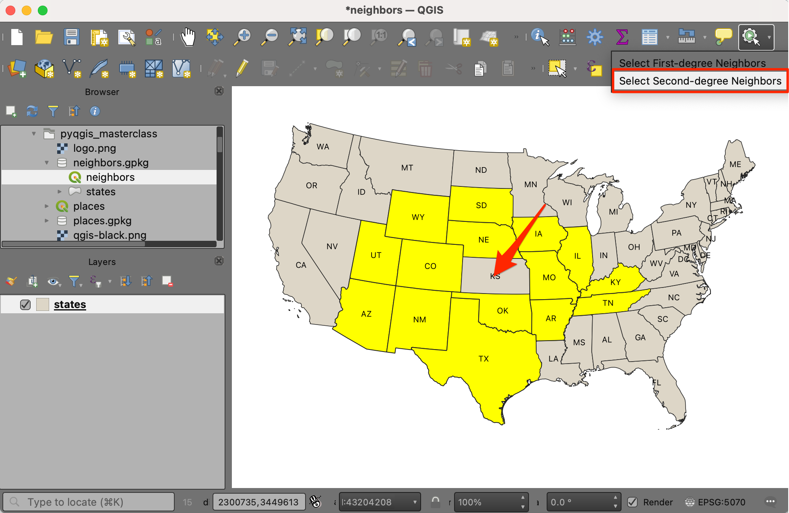
14.3 Learn More
If you are intrigued by the power of QGIS Actions, check out our full-length QGIS Actions workshop which cover many more practical examples of automating tasks in QGIS using Actions.
15. Supplement
This section contains code snippets for common PyQGIS operations.
All code snipets assume you have loaded the sf.qgz
project. You can load the project using the code below.
import os
data_dir = os.path.join(os.path.expanduser('~'), 'Downloads', 'pyqgis_masterclass')
project = QgsProject.instance()
project_name = 'sf.qgz'
project_path = os.path.join(data_dir, project_name)
project.read(project_path)Create a Geodesic Line
Connects 2 points using the great circle arc along an ellipsoid. Uses
the geodesicLine() method provided by the
QgsDistanceArea() class for the computation.
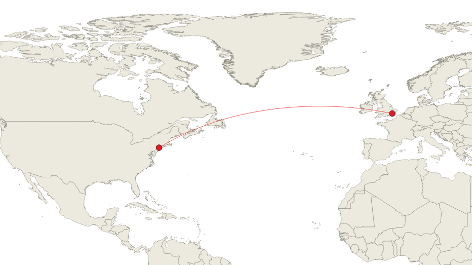
from qgis.core import QgsDistanceArea
new_york = (40.661, -73.944)
london = (51.5072, 0.1276)
lat1, lon1 = new_york
lat2, lon2 = london
# Remember the order is X,Y
point1 = QgsPointXY(lon1, lat1)
point2 = QgsPointXY(lon2, lat2)
d = QgsDistanceArea()
d.setEllipsoid('WGS84')
# Create a geodesic line with vertices every 100km
vertices = d.geodesicLine(point1, point2, 100000)
# Create a polyline from the vertices
# The method returns 1 geometry unless the line crosses antimeridien
geodesic_line = QgsGeometry.fromPolylineXY(vertices[0])
# Create a line layer to display the route
vlayer = QgsVectorLayer('LineString?crs=EPSG:4326', 'route', 'memory')
provider = vlayer.dataProvider()
f = QgsFeature()
f.setGeometry(geodesic_line)
provider.addFeature(f)
vlayer.updateExtents()
QgsProject.instance().addMapLayer(vlayer)Save Map Rendering as an Image
saveAsImage() method is quick and easy, but you do not
have much control over the resulting image. You can’t control the
resolution, size or how each layer will be rendered. There is another
way to achieve this. You can look at the code for exporting map as an
image in QGIS and you will discover 2 classes
QgsMapRendererParallelJob and
QgsMapRendererSequentialJob that lets you achieve a better
result. The code snippet below exports a hi-resolution image of the
project. 3
import os
data_dir = os.path.join(os.path.expanduser('~'), 'Downloads', 'pyqgis_masterclass')
image_name = 'sf_hires.png'
image_path = os.path.join(data_dir, image_name)
settings = iface.mapCanvas().mapSettings()
settings.setOutputSize(QSize(1000,1000))
settings.setFlag(QgsMapSettings.DrawLabeling, False)
settings.setFlag(QgsMapSettings.Antialiasing, True)
job = QgsMapRendererSequentialJob(settings)
job.start()
job.waitForFinished()
image = job.renderedImage()
image.save(image_path)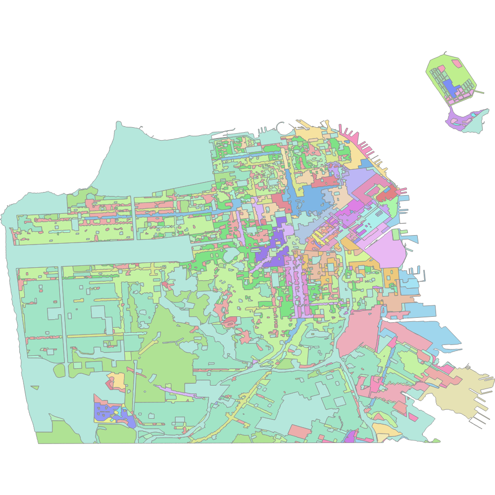
Turn a layer on/off
Set Canvas Extent to a Layer Extent
Select one of the layers in the Layers panel and run the following code.
Get Layers with Hierarchy
This code snippet is taken from the Cheat
Sheet for PyQGIS , but contains an important modification. If you
notice carefully, the function getGroupLayers is called
recursively from within getGroupLayers. This allows one to
even get layers that have sub-groups within layer groups.
def getGroupLayers(group):
print('- group:' + group.name())
for child in group.children():
if isinstance(child, QgsLayerTreeGroup):
getGroupLayers(child)
else:
print(' - layer:' + child.name())
root = QgsProject.instance().layerTreeRoot()
for child in root.children():
if isinstance(child, QgsLayerTreeGroup):
getGroupLayers(child)
elif isinstance(child, QgsLayerTreeLayer):
print ("- layer: " + child.name())
Adding CSV Layers
import os
data_dir = os.path.join(os.path.expanduser('~'), 'Downloads', 'pyqgis_masterclass')
filename = 'trees.csv'
csvpath = 'file:///' + data_dir + filename
uri = '{}?type=csv&xField={}&yField={}&crs={}'.format(
csvpath, 'Longitude', 'Latitude', 'EPSG:4326')
iface.addVectorLayer(uri, 'trees', 'delimitedtext')Inserting Layers in the Layer Tree
We can use the QgsLayerTree class to insert the layer at
an appropriate place.
import os
data_dir = os.path.join(os.path.expanduser('~'), 'Downloads', 'pyqgis_masterclass')
filename = 'srtm.tif'
uri = os.path.join(data_dir, filename)
rlayer = QgsRasterLayer(uri, 'srtm', 'gdal')
rastergroup = QgsLayerTreeGroup('raster layers')
treelayer = QgsLayerTreeLayer(rlayer)
rastergroup.insertChildNode(0, treelayer)
root = QgsProject.instance().layerTreeRoot()
root.insertChildNode(1, rastergroup)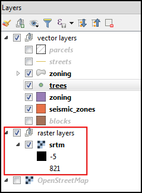
Saving Layers to Disk
Use the QgsRasterFileWriter or
QgsVectorFileWriter classes for writing layers to disk. 4
import os
data_dir = os.path.join(os.path.expanduser('~'), 'Downloads', 'pyqgis_masterclass')
options = QgsVectorFileWriter.SaveVectorOptions()
options.actionOnExistingFile = QgsVectorFileWriter.CreateOrOverwriteLayer
options.layerName = 'point'
filename = 'sf.gpkg'
path = os.path.join(data_dir, filename)
QgsVectorFileWriter.writeAsVectorFormat(vlayer, path, options)Displaying a label with a background color
This is a vast topic, but you can get a taste of the flexibility
offered by the API to control all aspects of labeling. Notice the class
name QgsPalLayerSettings - this is because QGIS uses a
labeling library called PAL for
labels. The code snippet below shows how to create a label for a point
layer with a background color. 5
vlayer = QgsProject.instance().mapLayersByName('point')[0]
symbol = QgsMarkerSymbol.createSimple({'name': 'square', 'color': 'red'})
vlayer.renderer().setSymbol(symbol)
label_settings = QgsPalLayerSettings()
#label_settings.drawBackground = True
label_settings.fieldName = 'name'
text_format = QgsTextFormat()
background_color = QgsTextBackgroundSettings()
background_color.setFillColor(QColor('white'))
background_color.setEnabled(True)
text_format.setBackground(background_color )
label_settings.setFormat(text_format)
vlayer.setLabeling(QgsVectorLayerSimpleLabeling(label_settings))
vlayer.setLabelsEnabled(True)
vlayer.triggerRepaint()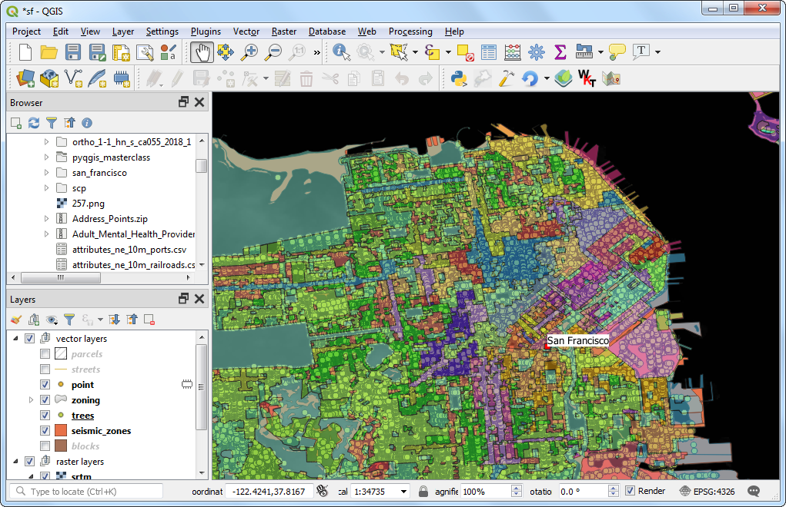
Edit Attribute Table of a Vector Layer
When you use processing, a new layer is created by each algorithm. This example shows, how to use processing to overwrite the original layer with the results of processing.
import os
data_dir = os.path.join(os.path.expanduser('~'), 'Downloads', 'pyqgis_masterclass')
filename = 'sf.gpkg|layername=blocks'
uri = os.path.join(data_dir, filename)
blocks = QgsVectorLayer(uri, 'blocks', 'ogr')
output = processing.run(
"qgis:deletecolumn",
{'INPUT': blocks,'COLUMN':['multigeom'],'OUTPUT':'memory:'})
outputlayer = output['OUTPUT']
final = processing.run("qgis:fieldcalculator",
{'INPUT':outputlayer,
'FIELD_NAME':'area',
'FIELD_TYPE':0,
'FIELD_LENGTH':10,
'FIELD_PRECISION':3,
'NEW_FIELD':True,
'FORMULA':'$area',
'OUTPUT':'memory:'})
finallayer = final['OUTPUT']
options = QgsVectorFileWriter.SaveVectorOptions()
# We overwrite the original layer
options.layerName = 'blocks'
options.actionOnExistingFile = QgsVectorFileWriter.CreateOrOverwriteLayer
output_file = 'sf.gpkg'
output_path = os.path.join(data_dir, output_file)
QgsVectorFileWriter.writeAsVectorFormat(finallayer, output_path, options)
QgsProject.instance().reloadAllLayers()Creating a PDF with Title
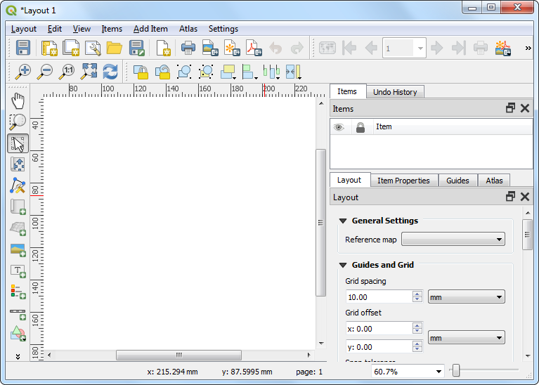
import os
data_dir = os.path.join(os.path.expanduser('~'), 'Downloads', 'pyqgis_masterclass')
project = QgsProject.instance()
extent = QgsRectangle(-122.52, 37.71, -122.35, 37.83)
layout = QgsPrintLayout(project)
layout.initializeDefaults()
pages = layout.pageCollection()
pages.beginPageSizeChange()
page = pages.page(0)
page.setPageSize('A4', QgsLayoutItemPage.Landscape)
pages.endPageSizeChange()
page_center = page.pageSize().width() / 2
map = QgsLayoutItemMap(layout)
map.setRect(QRectF(-122.52, 37.71, -122.35, 37.83))
map.setExtent(extent)
a4 = QPageSize().size(QPageSize.A4, QPageSize.Millimeter)
map.attemptResize(QgsLayoutSize(a4.height(), a4.width()))
layout.addItem(map)
title = QgsLayoutItemLabel(layout)
title.setText('San Francisco')
title.setFont(QFont('Arial', 36))
title.adjustSizeToText()
title.setReferencePoint(QgsLayoutItem.UpperMiddle)
title.attemptMove(QgsLayoutPoint(page_center, 10))
layout.addItem(title)
output_file = 'sf.pdf'
output_path = os.path.join(data_dir, output_file)
exporter = QgsLayoutExporter(layout)
exporter.exportToPdf(
output_path, QgsLayoutExporter.PdfExportSettings())
Simplifying Processing Scripts
The Processing Framework providers a simpler way to write processing
scripts by using the @alg decorator. Using this approach,
you are able to remove a lot of boilerplate code and focus on
just writing the main algorithm function. There are some limitations of
this approach - the main one being that scripts written using the
@alg decorator cannot be used in plugins. But if your goal
is to create a processing scripts, this is a much simpler style.
Note: the
@algdecorator cannot be used in plugins. If you are writing processing algorithms for a plugin, use the full script template shown in the previous section.
Let’s modify the save_attributes_algorithm.py script
covered in the previous
section to use the built-in @alg decorator. Locate the
script in Processing Toolbox under Scripts → Save
Attributes As CSV. Right-click on it and select Edit
Script…. Replace all the code in the Processing Script
Editor with the following and click the Save Script
button
from qgis.processing import alg
@alg(name='save_attributes', label='Save Attributes As CSV',
group='', group_label='')
@alg.input(type=alg.SOURCE, name='INPUT', label='Input Layer')
@alg.input(type=alg.FILE_DEST, name='OUTPUT', label='Output File')
def processAlgorithm(instance, parameters, context, feedback, inputs):
"""Saves the attributes of a vector layer to a CSV file."""
source = instance.parameterAsSource(parameters, 'INPUT', context)
csv = instance.parameterAsFileOutput(parameters, 'OUTPUT', context)
fieldnames = [field.name() for field in source.fields()]
# Compute the number of steps to display within the progress bar and
# get features from source
total = 100.0 / source.featureCount() if source.featureCount() else 0
features = source.getFeatures()
with open(csv, 'w') as output_file:
# write header
line = ','.join(name for name in fieldnames) + '\n'
output_file.write(line)
for current, f in enumerate(features):
# Stop the algorithm if cancel button has been clicked
if feedback.isCanceled():
break
# Add a feature in the sink
line = ','.join(str(f[name]) for name in fieldnames) + '\n'
output_file.write(line)
# Update the progress bar
feedback.setProgress(int(current * total))
return {'OUTPUT': csv}You can run the script and see that the behavior is almost identical
but the code is much simpler. The code uses the @alg
decorator for defining algorithm name, group, inputs and outputs in a
more concise way.
Another important thing to note is that to create a processing
algorithm, one must create a class that inherits from
QgsProcessingAlgorithm. When you write a class, you refer
to the current instance of the class with the keyword self.
Here you are just writing a function, and the decorator will create a
class for you. So we are using a parameter named instance.
When the decorator will create a class, the reference to the instance
will be passed on to our function as this parameter.
What next?
We have several step-by-step tutorials and guides on PyQGIS development. You can do those tutorials to practice your skills and build confidence.
Tutorials
- Getting Started With Python Programming
- Running Processing Algorithms via Python
- Using Custom Python Expression Functions
- Writing Python Scripts for Processing Framework
- Building a Python Plugin
- Building a Processing Plugin
Guides
Resources
- Official QGIS Documentation - PyQGIS Developer Cookbook
- PyQGIS 101: Introduction to QGIS Python programming for non-programmers by Anita Graser
- PyQGIS Samples by Thomas Gratier
- Deploying a Customized Version of QGIS by Régis Haubourg
Data Credits
blocks,parcels,streets,zoning,trees,seasmic_zones,shoreline. Downloaded from DataSF Open Data PortalsrtmNASA Shuttle Radar Topography Mission Global 1 arc second provided by The Land Processes Distributed Active Archive Center (LP DAAC). Downloaded using 30-Meter SRTM Tile Downloaderaoi: CA Places Boundaries from 2016 TIGER/Line Shapefiles. Downloaded from California Open Data Portalpopulated_places: Made with Natural Earth. Free vector and raster map data @ naturalearthdata.com
License
This course material is licensed under a Creative Commons Attribution 4.0 International (CC BY 4.0). You are free to re-use and adapt the material but are required to give appropriate credit to the original author as below:
Customizing QGIS with Python Course by Ujaval Gandhi www.spatialthoughts.com
This course is offered as an instructor-led online class. Visit Spatial Thoughts to know details of upcoming sessions.
© 2020 Spatial Thoughts www.spatialthoughts.com
Code reference https://gis.stackexchange.com/questions/318816/add-help-menu-entry-in-qgis-3-from-startup-py↩︎
Code reference https://github.com/qgis/QGIS/blob/8a3c7b14c367771d096b4a6d006aa3c4b1017dd5/tests/src/python/utilities.py↩︎
Code reference https://gis.stackexchange.com/questions/285346/add-layers-to-geopackage-using-pyqgis-qgis-3↩︎
Code reference https://gis.stackexchange.com/questions/292136/qgspallayersettings-error/294019↩︎